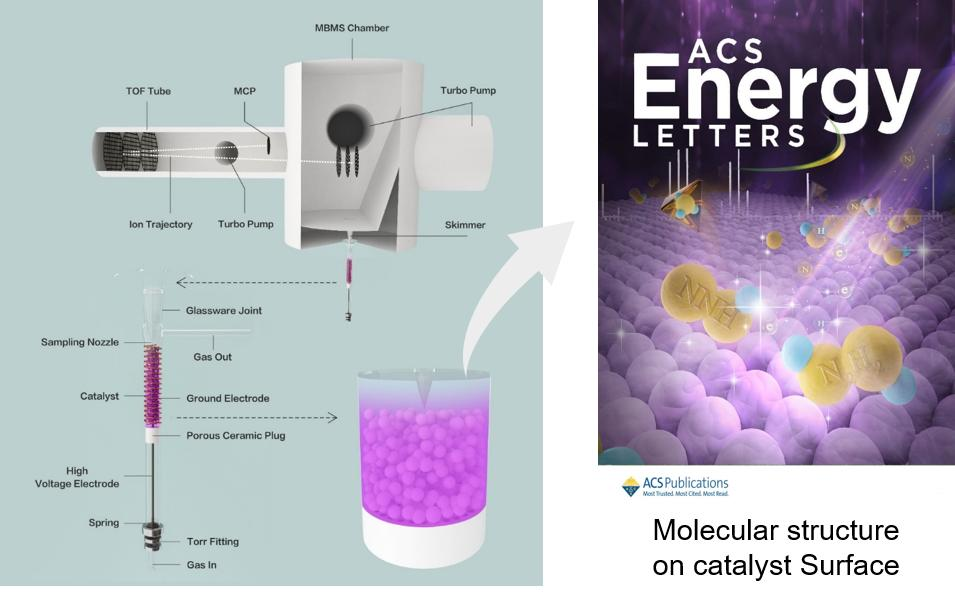
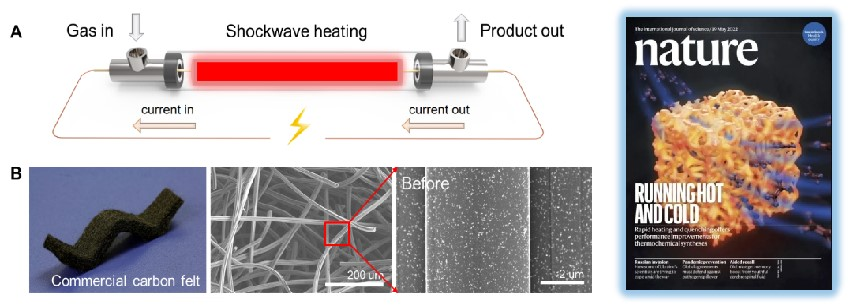

Research
Ultimate Combustion
1. Supercritical Combustion Experiments
Supercritical combustion has tremendous potential in engines and gas turbines and due to its high combustion efficiency and ultra-lean flammability. However, supercritical combustion chemistry is very challenging due to the failure of gas-phase chemistry theory. We have built the first supercritical-pressure jet-stirred reactor (SP-JSR) for reaction kinetics study up to 200 atm. It is noted that this is the first ultra-high pressure JSR in the world. Our reactor design has won the Karl H. Walther Award from American scientific glassblowers society.
Studies of high-pressure n-butane oxidation with CO2 dilution up to 100 atm using a supercritical-pressure jet-stirred reactor
Hao Zhao*, Chao Yan, Tianhan Zhang, Guoming Ma, Michael J. Souza, Chongwen Zhou, and Yiguang Ju.
Proc. Combust. Inst. 38 (2021) 279-287.
 |
2. Supercritical Flow Computation
The Virial method describing real-fluid EoS, thermodynamic properties, and chemical potentials calculations is developed and applied for combustion modelling for various fuels in this work. The Virial method is constructed with deeper-level physical insights and higher accuracy comparing with empirical methods. The complete Virial method applicable to simulations of various fuels has been incorporated into Cantera program.
Theoretical Studies of Real-Fluid Oxidation of Hydrogen Under Supercritical Conditions by Using the Virial Equation of State
Junfeng Bai, Peng Zhang, Chong-Wen Zhou, Hao Zhao*.
Combust. Flame, (2021) In press.
3. Supercritical Combustion Theory
We developed supercritical combustion models of H2, CH4, CH4O, C3H8, DME, C4H10 at 100 atm by using SP-JSR coupled with advanced diagnostics and real-fluid combustion simulations. Special attentions have been paid to supercritical low temperature chemistry and special NTC behavior. It is a collaborative work between PKU, Princeton University, and Argonne National Lab.
Studies of low and intermediate temperature oxidation of propane up to 100 atm in a supercritical-pressure jet-stirred reactor
Hao Zhao*, Chao Yan, Guohui Song, Ziyu Wang, Yiguang Ju.
Proc. Combust. Inst. (2023) In press.
Methanol oxidation up to 100 atm in a supercritical pressure jet-stirred reactor
Ziyu Wang, Hao Zhao*, Chao Yan, Ying Lin, Aditya D. Lele, Wenbin Xu, Brandon Rotavera, Ahren W. Jasper, Stephen J. Klippenstein, Yiguang Ju.
Proc. Combust. Inst. (2023) In press
Low- and intermediate-temperature oxidation of dimethyl ether up to 100 atm in a supercritical pressure jet-stirred reactor
Chao Yan, Hao Zhao*, Ziyu Wang, Guohui Song, Ying Lin, Clayton R. Mulvihill, Ahren W. Jasper, Stephen J. Klippenstein, Yiguang Ju.
Combust. Flame, (2022) In Press.
Studies of high-pressure n-butane oxidation with CO2 dilution up to 100 atm using a supercritical-pressure jet-stirred reactor
Hao Zhao*, Chao Yan, Tianhan Zhang, Guoming Ma, Michael J. Souza, Chongwen Zhou, and Yiguang Ju.
Proc. Combust. Inst. 38 (2021) 279-287.
4. Sensitized Combustion Chemistry
The reaction mechanism of the following fuel was studied by means of electron impact flight mass spectrometry, laser absorption spectroscopy, Faraday rotation spectroscopy and Schlieren imaging.
The non-equilibrium fast thermal decomposition of formaldehyde (HCO) radical under high pressure was experimentally demonstrated by using a high pressure spherical combustion bomb, and the kinetic mechanism of the high pressure reaction between formaldehyde and 1, 3-butadiene was developed/updated.
Effect of prompt dissociation of formyl radical on 1, 3, 5-trioxane and CH2O laminar flame speeds with CO2 dilution at elevated pressure
Hao Zhao*, Jiapeng Fu, Francis M. Haas, Yiguang Ju.
Combust. Flame 183 (2017) 253-260.
Studies of high pressure 1,3-butadiene flame speeds and high temperature chemistry using hydrogen and oxygen sensitization
Hao Zhao*, Zunhua Zhang, Yacine Rezgui, Ningbo Zhao, Yiguang Ju.
Combust. Flame 200 (2019) 135-141.
 |
The sensitization of NOx and ozone to low temperature chemistry of fuel was studied. The Princeton ozone reaction mechanism (HP-O3 MECH), NOx reaction mechanism, ozonedimethyl ether coupling mechanism and n-pentane NOx coupling mechanism were developed.
Study of low temperature oxidation of n-pentane with nitric oxide addition in a jet stirred reactor
Hao Zhao*, Lingnan Wu, Charles Patrick, Zunhua Zhang, Yacine Rezgui, Xueliang Yang, Gerard Wysocki, Yiguang Ju.
Combust. Flame 197 (2018) 78-87.
Experimental and modeling study of the mutual oxidation of n-pentane and nitrogen dioxide at low and high temperatures in a jet stirred reactor
Hao Zhao*, Alon Dana, Zunhua Zhang, William Green, Yiguang Ju.
Energy 165 (2018) 727-738.
Kinetic studies of ozone assisted low temperature oxidation of dimethyl ether in a flow reactor using molecular-beam mass spectrometry
Hao Zhao*, Xueliang Yang, Yiguang Ju.
Combust. Flame 173 (2016) 187-194.
Quantification of H2O、CH4、C2H2、CH2Oby using QCL
Ozone assisted deflagration to detonation transition
Plasma Assisted Synthesis
1. Chemical Synthesis
We use non-thermal plasma technology to assist important chemical synthesis, such as ammonia, bio-methane, bio-methanol, etc., and further reduce CO2 emission and enhance energy sustainability. We studied the plasma catalyzed synthesis of NH3, and firstly identified and measured the concentration of the radical NNH and N2H2 by using in-situ molecular-beam mass spectrometry. This work was published in ACS Energy Letters as the front cover.
|  |
2. Experiments and Kinetic Modeling
We developed pulsed heating/quenching technology for enabling ammonia synthesis under atmospheric conditions, and predicted its potential application both in experiments and kinetic modeling. This work has been recently published in Nature as the front cover.
In situ identification of NNH and N2H2 by using molecular-beam mass spectrometry in plasma-assisted catalysis for NH3 synthesis
Hao Zhao, Guohui Song, Zhe Chen, Xiaofang Yang, Chao Yan, Shota Abe, Yiguang Ju, Sankaran Sundaresan, Bruce E. Koel*.
CS Energy Lett., 7 (2022) 53–58.
Programmable Heating and Quenching for Efficient Thermochemical Synthesis
Qi Dong, Yonggang Yao, Sichao Cheng, Konstantinos Alexopoulos, Jinlong Gao, Sanjana Srinivas, Yifan Wang, Yong Pei, Chaolun Zheng, Alexandra H. Brozena, Xizheng Wang, Jiaqi Dai, Hao Zhao, Weiqing Zheng, Hilal Ezgi Toraman, Zhiwei Lin, Bao Yang, Yiguang Ju, Dionisios G. Vlachos, Dongxia Liu, Liangbing Hu*.
Nature, 605 (2022) 470-476.
|  |
Lithium Battery Fire Safety
1. The Kinetic Chemistry of Battery
In lithium batteries, thermal runaway occurs at abuse conditions due to the interaction between cathode material and electrolyte, however, the kinetic chemistry of battery fire is still unknown. We first used ozone to mimic the oxidizing environment in Li-ion battery by providing active atomic oxygen. This study provides insights of the chemically sensitized gas-phase low temperature chemistry of electrolyte components and its degradation at 400-500 K.
Studies of ozone-sensitized low- and high-temperature oxidations of diethyl carbonate
Hao Zhao*, Shixiang Liu, Can Huang, Chao Yan, Yongfeng Qi, Feng Zhang, Yiguang Ju.
J. Phys. Chem. A 125 (2021) 1760-1765.
2. In-situ Diagnostics of Key Parameters
In-situ monitoring of key characteristic parameters in electrolyte under strong electromagnetic interference is very important. We proposed an all-fiber probe and realized the in-situ diagnostics of key parameters in lithium batteries such as temperature, stress, and chemical composition in high accuracy.
Transformer oil-dissolved acetylene detection with photonic crystal fiber loop ringdown spectroscopy
Yuan Wang, Guo-ming Ma*, Diya Zheng, Wei-qi Qin, Jun Jiang, Hong-yang Zhou, and Chao Yan.
Sensors and Actuators B: Chemical 346 (2021): 130590.
Studies of ozone-sensitized low- and high-temperature oxidations of diethyl carbonate
Guo-ming Ma, Yuan Wang, Zhang-lin Chen, Yang-yang Xie, Wei-qi Qin, Diya Zheng, Hong-yang Zhou, Hao Zhao*, and Chao Yan.
arXiv preprint arXiv:2203.14758 (2022).